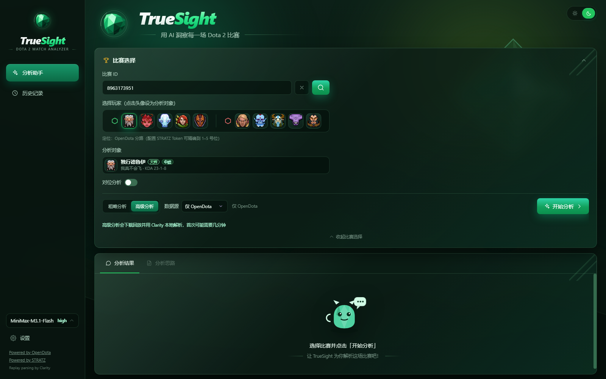
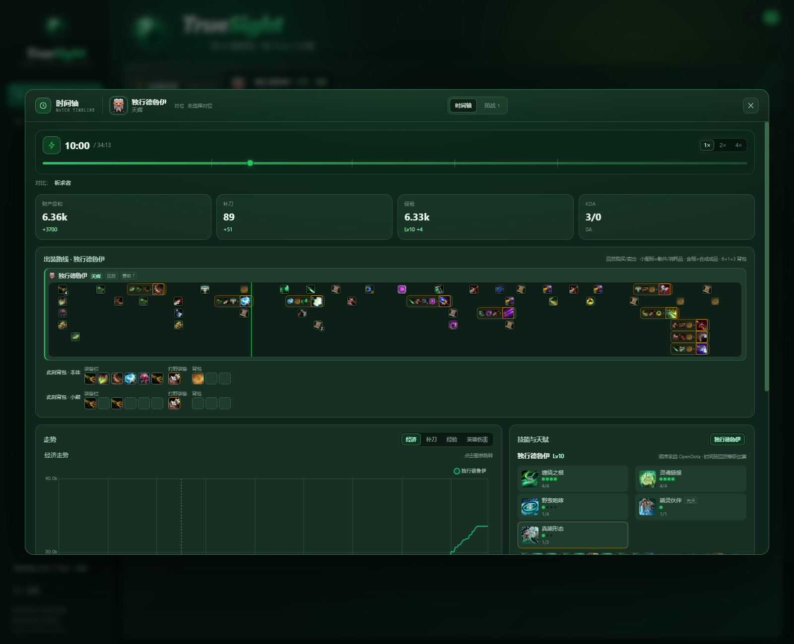
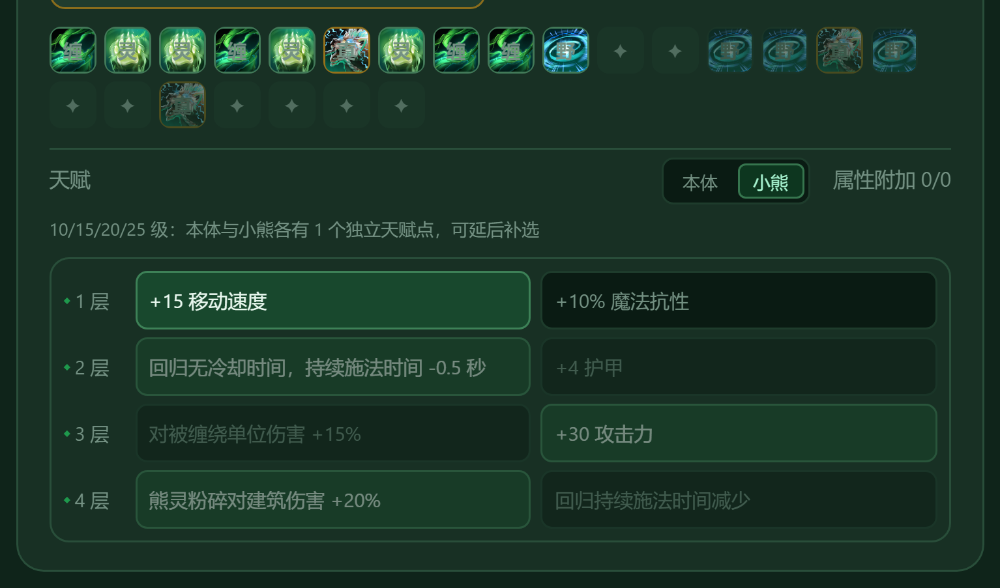
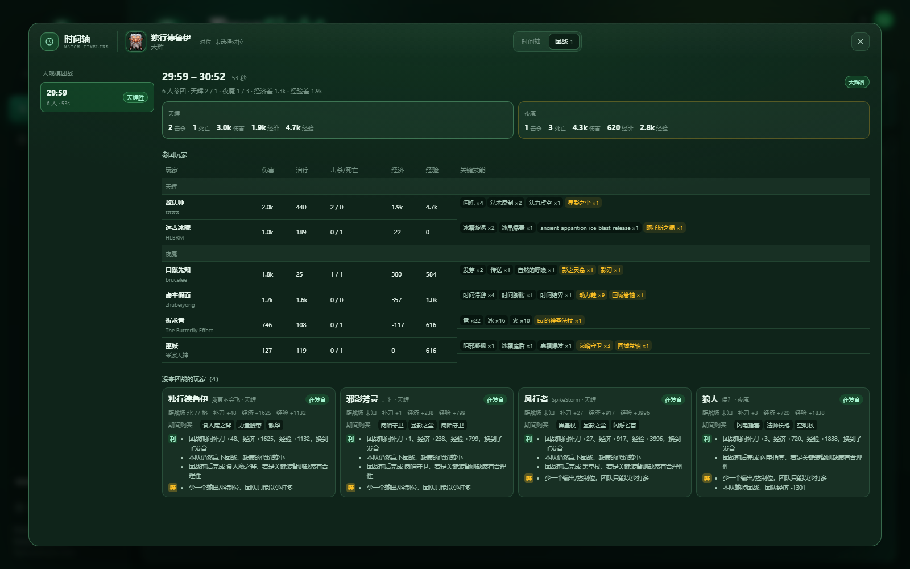

Windows 桌面客户端
安装版与便携版两种形态。Electron 窗口内置完整后端、JRE、Clarity 与前端，不需要另装 Python、Java 或 Node。
Setup / PortableWINDOWS DESKTOP · LOCAL-FIRST
TrueSight 桌面客户端内置 Python、Java 与 Clarity，下载安装即可开始。 OpenDota / STRATZ 数据、本地录像解析与 AI 复盘，全部在同一个界面完成。

WHAT YOU GET
不折腾运行环境，不再分别打开数据网站、录像工具和聊天窗口。TrueSight 把复盘需要的部分装进一个客户端。
安装版与便携版两种形态。Electron 窗口内置完整后端、JRE、Clarity 与前端，不需要另装 Python、Java 或 Node。
Setup / Portable支持 OpenCode Go、MiniMax、DeepSeek、OpenAI/Codex API、小米 MiMo，以及带 OpenAI Chat、Responses、Anthropic Messages 协议的自定义模型。
Multi-provider经济、补刀、经验、等级与英雄伤害曲线；点击任意时间点，联动出装、技能、天赋和背包快照。
5 秒采样边路 2v2 / 2v3 完整显示，分析对象一键切换；对位可跟随分路自动调整，也可自定义保留。
1v1 · 2v2 · 3v3合成、卷轴、买卖与消耗按真实格位还原；团战结合伤害、治疗、增益、技能与战场距离，缺席原因清晰可见。
Replay exact前端只访问本机服务，第三方请求由内置 Python 代理；API Key 仅存于当前客户端，不写入日志、安装包或代码仓库。
Privacy firstINTERFACE
统一的时间轴弹窗、对位头部、技能天赋和团战面板，让数据在同一种视觉语言里展开。



DOWNLOAD FOR WINDOWS
选择安装版或便携版。安装后无需单独配置 Python、Java、Node 或 Clarity， 首次启动即可进入比赛分析。
当前构建未配置代码签名，Windows SmartScreen 可能提示“未知发布者”。选择“更多信息 → 仍要运行”即可。
GETTING STARTED
不再需要先安装 Python 或 Java。客户端已经内置完整运行时与 Clarity 解析器。
选择安装版，按向导完成安装；或直接运行便携版 exe。两个版本功能一致。
双击 TrueSight。内置 Python、Java、Clarity 与前端会自动启动，不需要命令行或环境变量。
输入比赛 ID，选择分析对象；需要更细的复盘时切换到「高级分析」，让本地 Clarity 解析录像。
在设置页填写模型 API Key，选择提供商或自定义接口。Key 只保存在本地，由内置服务转发。
功能一致。安装版会安装到本机并创建快捷方式；便携版是单个 exe，适合放 U 盘或临时使用。便携版首次启动会把后端准备到用户数据目录，因此第一次会稍慢。
不需要。客户端已内置 Python、JRE 21、Clarity 与解析器。只有使用源码 Web 模式开发时才需要按 README 准备环境。
支持 OpenCode Go、MiniMax、DeepSeek、OpenAI/Codex API、小米 MiMo，以及带 OpenAI Chat Completions、OpenAI Responses、Anthropic Messages 协议的自定义接口。Key 只保存在本地客户端。
当前安装包尚未配置代码签名证书，Windows SmartScreen 会显示未知发布者。确认文件来自本页或 GitHub Releases 后，选择“更多信息 → 仍要运行”。
当前客户端面向 Windows 10 / 11 x64。核心前端与 Python 服务可移植，但 Java 运行时、安装器和部分路径仍需按平台适配。
下载新版本安装包覆盖安装即可。安装版可在 Windows「应用和功能」中卸载；便携版退出后删除 exe。用户数据位于 %APPDATA%\TrueSight。